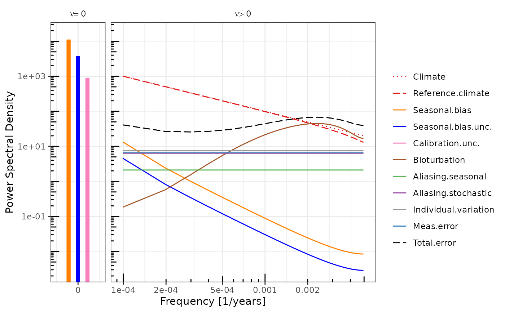

Power Spectral Density of the Error in a Sediment Archived Proxy Timeseries
ProxyErrorSpectrum.RdPower Spectral Density of the Error in a Sediment Archived Proxy Timeseries
Usage
ProxyErrorSpectrum(
nu = NULL,
tau_s,
tau_b,
tau_p,
tau_r,
T,
delta_t,
N,
n.k,
clim.spec.fun,
clim.spec.fun.args,
sig.sq_a,
sig.sq_c,
nu_a,
nu_c,
phi_a,
phi_c,
delta_phi_c,
sigma.meas,
sigma.ind,
sigma.cal,
n.nu.prime = 1000,
...
)Arguments
- nu
frequency
- tau_s
sediment slice thickness in years (layer.width / sedimentation rate)
- tau_b
timescale of bioturbation (bioturbation depth / sedimentation rate) (L/sr)
- tau_p
length of proxy carrier "growth season" (< 12 months)
- tau_r
width of moving average filter that represents the "interpreted" resolution of the timeseries
- T
length of a finite time series, e.g. 1e04
- delta_t
sampling frequency of the sediment core / climate timeseries
- N
number of signal carriers (e.g. individual foraminifera)
- n.k
the number of aliasers used when estimating the error spectrum of the stochastic climate signal. Defaults to 15, does not normally need to be adjusted.
- clim.spec.fun
a function to return climate power spectral density as a function of frequency, nu
- clim.spec.fun.args
arguments to the named climate power spectrum function
- sig.sq_a
variance of precessionary amplitude modulation
- sig.sq_c
variance of the seasonal cycle
- nu_a
1/tau_a = frequency of the orbital variation, e.g. for precession 1/23e03 yrs
- nu_c
1/1 (yr) = frequency of the seasonal cycle
- phi_a
phase of precessionary amplitude modulation relative to centre of finite timeseries of length T
- phi_c
phase of carrier growth season relative to the maximum of the seasonal cycle
- delta_phi_c
Uncertainty in the phase of the signal carrier production. A value between 0 and 2Pi.
- sigma.meas
the standard deviation of the per sample measurement error
- sigma.ind
the standard deviation of error between individuals (e.g. foraminifera) e.g. due to "vital effects" or calcification depth
- sigma.cal
the 1-sigma (standard deviation) of the calibration error in the same units as the proxy
- n.nu.prime
number of discrete frequencies at which to evaluate the PSD of the error
Examples
spec.pars <- GetSpecPars("Mg_Ca", tau_p = 4 / 12, delta_phi_c = pi)
spec.obj <- do.call(ProxyErrorSpectrum, spec.pars)
#> Warning: Rounding T to 10100 so that T is an odd integer multiple of delta_t
PlotSpecError(spec.obj)
#> Warning: no non-missing arguments to max; returning -Inf
#> Warning: no non-missing arguments to max; returning -Inf
#> Warning: no non-missing arguments to min; returning Inf
#> Warning: no non-missing arguments to min; returning Inf
#> Joining, by = c("component", "ax.grp")
#> Warning: Transformation introduced infinite values in continuous y-axis
#> geom_path: Each group consists of only one observation. Do you need to adjust
#> the group aesthetic?
